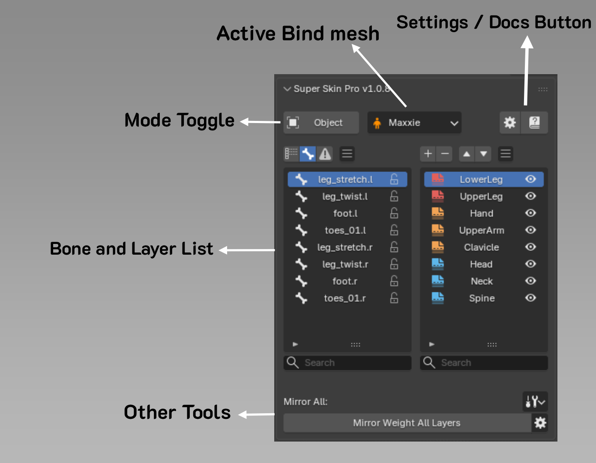

Interface Overview¶

Active Bind Mesh
Shows the currently selected Mesh. See more on managing Bind Mesh
Mode Toggle
Press to switch mode between Object Mode, Pose Mode, and Edit Weight Mode.
Bone & Layer List
The left side shows the Bone list, the right side shows the Layer list. Read more at Bone and Layer List
Other Tools
Shows various tools, depending on the current Mode:
Setting / Docs
-
Additional Setting buttons, such as changing shortcuts or adjusting the Bone Overlay size.
-
A button to open the usage guide.